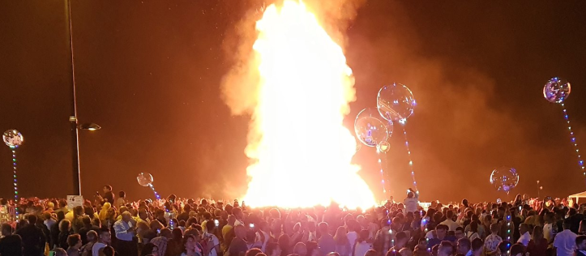

Every year on the night of June 23, the beaches of Salobreña come alive with firelight, music, laughter, and one of the most magical traditions in Andalucía: the celebration of San Juan.
If you have never experienced San Juan on the Costa Tropical, it is something truly special. Locals and visitors gather on the beach to welcome the beginning of summer in a way that feels both festive and deeply connected to tradition.
The first year I participated felt like pure magic. The dark blue sea stretched into the night while thousands of people filled the beach. In the middle stood a giant bonfire nearly 10 meters high, waiting to be lit. The atmosphere was impossible to describe properly: relaxed, excited, joyful, and full of energy. For someone experiencing it for the first time, it felt unforgettable from the very first moment.

People begin gathering already in the afternoon. Families set up barbecues and picnic areas, friends bring coolers and music, and the beach slowly transforms into one giant celebration. As the sun sets behind the whitewashed streets of Salobreña and its hilltop castle, the entire coastline starts glowing with candles, small fires, and smiling faces.
Children run around the sand excited for the night ahead while groups of friends build bonfires and share food together.
Then, as darkness fully arrives, the fireworks begin.
The fireworks over the Mediterranean are one of the most beautiful parts of the night. Reflections dance across the water while explosions of colour light up the sky above the beach and the castle. For a few moments everyone stops talking and simply watches. You can hear the waves, music in the distance, and thousands of people cheering together under the warm summer night. It creates one of those rare moments where complete strangers all seem connected.
The atmosphere is relaxed, joyful, and unmistakably Andalusian.
The Tradition Of Fire And Water
San Juan is known as the Night of Fire. Across Spain, people celebrate with bonfires believed to cleanse away bad energy and welcome good luck for the coming months.
In Salobreña, the beach becomes a sea of glowing fires. Some people write wishes on paper and throw them into the flames. Others jump over the bonfires, traditionally three times, for good fortune. I tried it myself and honestly, it worked a little magic for me.
And then comes the midnight ritual. At exactly midnight, many people run into the Mediterranean Sea. According to tradition, washing in the water on San Juan night brings purification, luck, and renewal. Even people who do not fully believe in the tradition usually join in because the moment itself feels so special.
The combination of warm summer air, cool seawater, music echoing across the beach, bonfires burning along the sand, and fireworks lighting the sky creates an atmosphere that feels almost dreamlike.
More Than A Festival
San Juan is more than just a beach party. It is a celebration of renewal, community, tradition, and the simple joy of summer nights by the sea.
For many people living on the Costa Tropical, it marks the true beginning of summer.
And once you experience San Juan in Salobreña for yourself, you will understand why people return year after year.